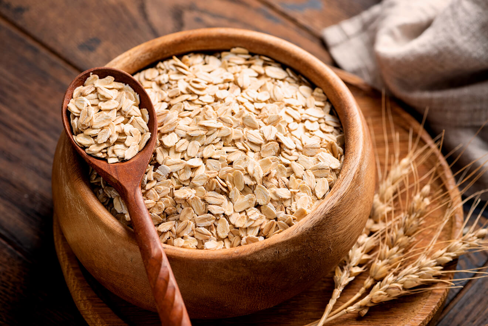
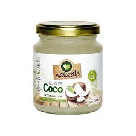
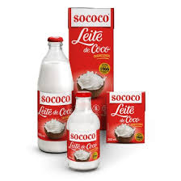

Torta Mousse de Limão Siciliano
Sobremesa cítrica e aveludada com base de castanhas e tâmaras. O frescor do limão siciliano para encerrar o dia com leveza.
Ingredientes:
- 1 xícara de amêndoas.
-

1 xícara de aveia. -

1/2 xícara de óleo de coco extra virgem prensado a frio. -
 Suco de 1/2 xícara de limão siciliano e raspas para decorar.
Suco de 1/2 xícara de limão siciliano e raspas para decorar.
-

Creme de 2 latas de leite de coco (apenas a parte sólida). -
 Uma pitada de sal marinho e melado a gosto.
Uma pitada de sal marinho e melado a gosto.
Modo de Preparo
- Para a base: processe as amêndoas e aveia com óleo de coco e melado. Pressione em uma forma e asse por 15 min a 180°C até dourar.
- Para o recheio: bata o creme de leite de coco gelado (sem o soro) com o suco de limão e um toque de baunilha até ficar aerado.
- Adicione o óleo de coco derretido à mistura e bata rapidamente para garantir que a mousse firme ao resfriar.
- Despeje o creme sobre a base já fria e espalhe delicadamente com uma espátula para nivelar.
- Leve à geladeira por no mínimo 6 horas. Finalize com raspas frescas de limão siciliano antes de servir para um aroma intenso.